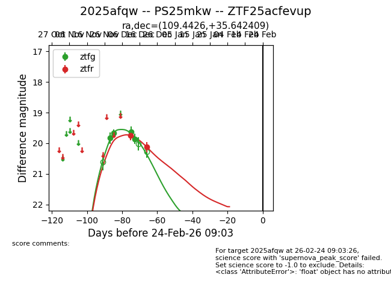
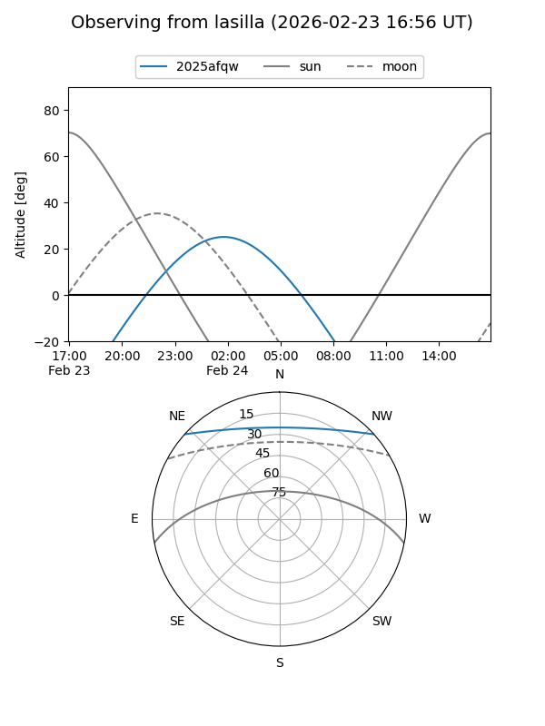
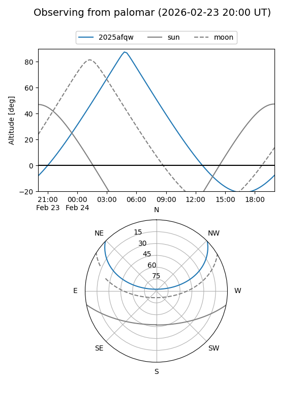
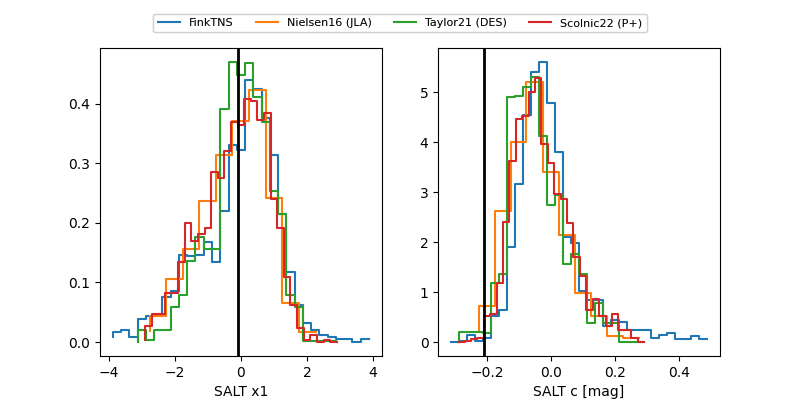

2025afqw
Target 2025afqw at 2025-12-18 11:17
Aliases and brokers:
FINK: fink-portal.org/ZTF25acfevup
Lasair: lasair-ztf.lsst.ac.uk/objects/ZTF25acfevup
ALeRCE: alerce.online/object/ZTF25acfevup
TNS: wis-tns.org/object/2025afqw
YSE: ziggy.ucolick.org/yse/transient_detail/2025afqw
alt names
ZTF25acfevup (ztf,fink_ztf)
2025afqw (tns,yse)
Coordinates:
equatorial (ra, dec) = 109.4426,+35.64241
equatorial (HMS+DMS) = 07:17:46.22,+35:38:32.67
galactic (l, b) = (182.4007,+20.40361)
Photometry
last ztfg=19.86, ztfr=19.75
4 ztfg, 1 ztfr detections
Lightcurve

Visibility


Additional plots
